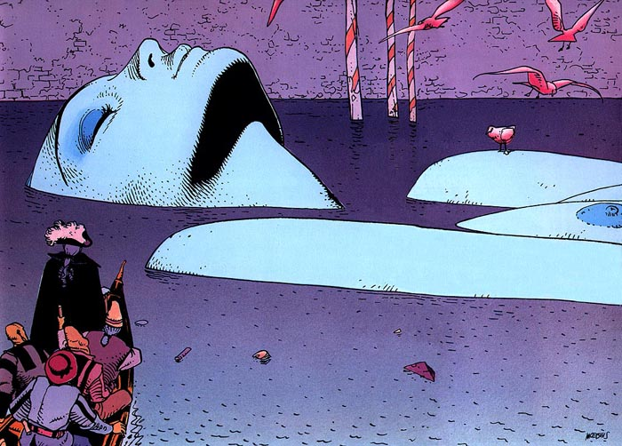

Mi cuenta
Mi cuenta Inicio
Inicio Novedades
Novedades Comics
Comics Foro
Foro Tienda
TiendaEl legado de Moebius
Jean Henri Gaston Giraud, uno de los grandes genios de la historieta europea, fue derrotado en 2012 por un cáncer que arrastraba tiempo atrás: nos deja un legado estético inmenso que ha influido tanto en el cómic como en el cine. Nacido en un suburbio parisino en 1938, se aficionó al tebeo desde pequeño y estudió en la Escuela Nacional de Artes Aplicadas de la capital francesa, donde conocería y entablaría amistad entre otros, con Jean-Claude Mézières, otro gigante de la historieta francesa, autor de la saga de Valérian: agente espacio temporal. Curioso, versátil, ecléctico y, sobre todo, dispuesto a la experimentación constante, Giraud consiguió algo que sólo está al alcance de muy pocos ilustradores: triunfar con dos estilos de dibujo muy diferentes, firmando como Gir y, alternativamente, como Moebius. Su apertura al mundo y a todo tipo de influencias creativas estuvo muy marcada por una adolescencia agitada que incluyó la residencia en México a donde se fue con 16 años después de que su madre se casara con un mexicano; según sus propios recuerdos, allí descubrió entre otras cosas la pintura, el jazz y la marihuana, además de vivir su primera experiencia sexual. No es extraño, pues, que muchas de sus obras se desarrollen gráficamente sobre fondos desérticos y rocosos que, de una manera más o menos consciente, remiten una y otra vez a aquellos años decisivos para su formación.